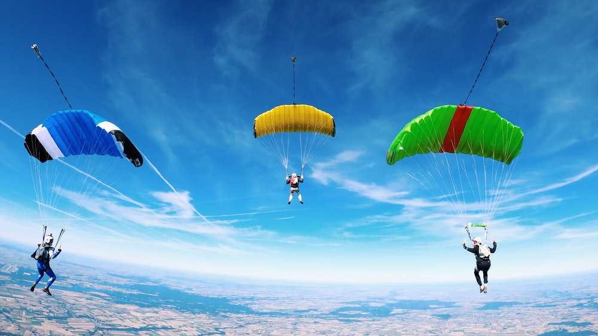

List of Top Most Visited Tourist Destinations of Kerala
Alleppey: Kerala’s favourite backwater tourist destination, Alleppey is famed for offering an incredible experience of staying and cruising in a traditional houseboat.
Munnar: Adorned with myriad tea estates and rolling hills, Munnar is without a doubt the best hill station in Kerala. It is a must visit tourist place in Kerala for a relaxing holiday as well as relishing adventure activities.
Kochi: A cosmopolitan city with a bustling port, Kochi is where the modern lifestyle meets the traditional one. The city is the perfect reflection of Kerala and has many experiences up its sleeves.
Thekkady: Fringing the popular Periyar National Park, Thekkady is a hill station in Kerala that attracts many nature and wildlife lovers. It is one of the best places to enjoy the scenic beauty of Kerala.
Thrissur: The cultural capital, Thrissur does not need an introduction. From drawing a large crowd on its Temple Festival (Thrissur Pooram) to being an abode to several cultural centres, the city is a must-visit in Kerala.
Kovalam: A small coastal town with some of the best beaches of Kerala, Kovalam is a place where you get to enjoy sunbathing, swimming, herbal body toning massages, special cultural programmes and catamaran cruising.
Wayanad: Dotted with camping sites, trekking trails and gorgeous waterfalls, Wayanad is a peaceful and picturesque hill station that is perfect for holiday in Kerala.
Thekkady: Fringing the popular Periyar National Park, Thekkady is a hill station in Kerala that attracts many nature and wildlife lovers. It is one of the best places to enjoy the scenic beauty of Kerala.
TAMILNADU TOURISM
List of Top Most Visited Tourist Destinations of TamilNadu
Chennai: Chennai, the capital of Tamil Nadu, is known as the Gateway to South India. It's a sprawling and busy, yet conservative, city with deep traditions that are yet to give way to the growing foreign influence there.
.
Mamallapuram: find one of the top beaches on India's east coast—Mahabalipuram (also known as Mamallapuram). The beach has a thriving backpacker and surfing scene but is also popular with tourists who come to relax at the resorts there. It's known for its stone sculpture industry, Other attractions are the Shore Temple, Five Rathas , and Arjuna's Penance
Madurai: Ancient Madurai in Tamil Nadu is home to the most impressive and important temple in south India --the Meenakshi Temple. If you only see one south Indian temple, the Meenakshi Temple should be it. The city of Madurai is more than 4,000 years old and has remained a major center of Tamil culture and learning.
Thanjavur: Thanjavur is best known for its astonishing Brihadeshwara Temple (known as the Big Temple), a UNESCO World Heritage Site made out of granite by Chola king Raja Raja I in the 11th century. It's an engineering marvel. However, the town is also a distinguished hub of arts and crafts in South India.
Pondicherry: Pondicherry, a separate union territory on the east coast of Tamil Nadu, is not really a place you'd expect to find in India. It was a former 18th century French colony and still retains a distinctly French flavor. Those who feel in need of a break from India will enjoy the taste of French culture there and the relaxed atmosphere..
Kumbakonam and Gangaikonda Cholapuram: Kumbakonam and Gangaikonda Cholapuram, northeast of Thanjavur, have two Great Living Chola Temples that are part of the UNESCO World Heritage listing too. The royal temple at Gangaikonda Cholapuram was built not long after
Thanjavur's Big Temple in the 11th century, when Rajendra Chola I relocated the Chola capital there in celebration of victory.
TAMILNADU TOURISM
List of Top Most Visited Tourist Destinations of TamilNadu
Pangong: Pangong Tso lake found fame thanks to Aamir Khan's 3 Idiots so without a doubt, this place deserves to be on your itinerary of places to visit in Ladakh. Pack a sweet picnic basket and head with your folks to the lake and maybe even camp next to it as you enjoy every moment of peace and tranquillity.
.
Thiksey Monastery: This 12-storey complex hosts over 500 monks and is considered to be one of the most beautiful Buddhist monasteries in all of Ladakh. For Ladakh sightseeing, Thiksey Gompa will enlighten you with knowledge about some of the Buddhist culture, lifestyle, scriptures, statues and even paintings.
Khardung-la Pass: Rent a Himalayan and go nuts on the road to Khardung-la pass. The pass is a gateway to the Nubra as well as Shyok valley and is one of the most elevated motorable terrains worldwide. Interestingly, the roads were opened in 1988 for vehicles to pass through. Cruisers and Himalayans considered to be the best means to travel here, to experience the rugged beauty of the journey.
Markha Valley: If camping is your thing then you won't find a better spot than at the Markha valley in Ladakh! You can trek up to some amazing sites such as Markha, Skiu and Hankar for starters. Once you reach the summit, you can unwind with some lovely tents, bonfire and make friends with strangers. Quite the deal, don't you think?
Nubra Valley: Famous for its white sand deserts and double-humped camels, Nubra Valley is certainly one of the best places to visit in Ladakh. Not just the scenic slopes of Karakoram range but also the confluence of Shyak and Siachen rivers is what makes Nubra valley an exquisite voyage!
Tso Moriri lake:
Imagine a sparkling blue lake nestled in the midst of rugged surroundings. That, my friends, is Tso Moriri lake. Being 15000 ft above sea level in a rather rough environment is this tiny paradise. The place is often not considered ideal by many tourists due to the high altitude at which it stands proudly. However, with its impeccably undisturbed ambiance, it would be shame to miss this place.
MAKE YOUR TRIP MORE FUN WITH ADVENTURES

About Us Page
BK TOURS AND TRAVELS!
WE MAKE YOUR TRIP ADVENTUROUS & UNFORGETTABLE
Our Team
BK
CEO & Founder
Iam Proud to be a Travel Agent to assist my clients,Who many times become my Friends
bk@example.com
Cibi
Art Director
Iam Proud to be a Travel Agent to assist my clients,Who many times become my Friends
cibi@example.com
Abinav
Designer
Iam Proud to be a Travel Agent to assist my clients,Who many times become my Friends